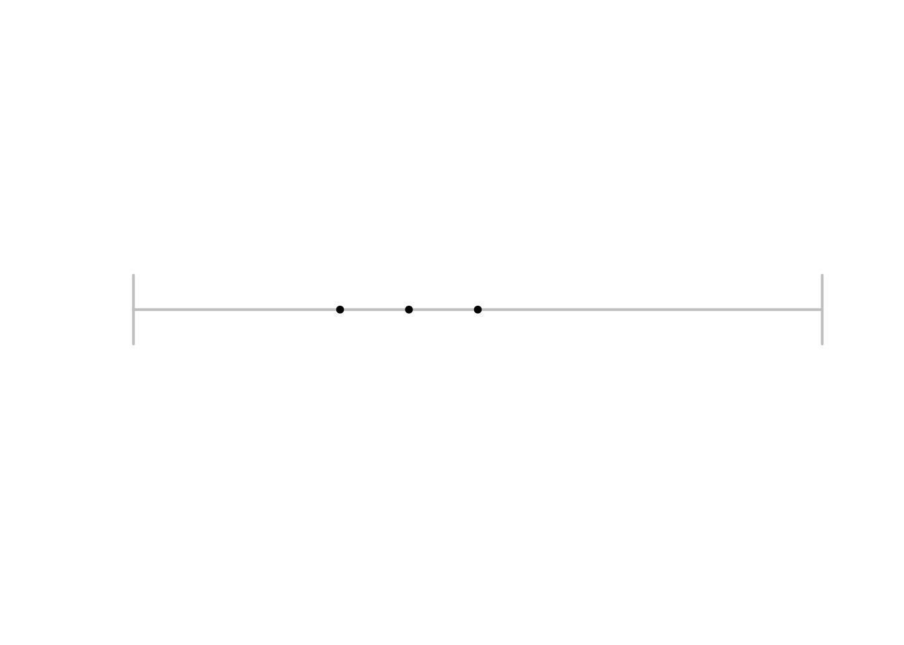
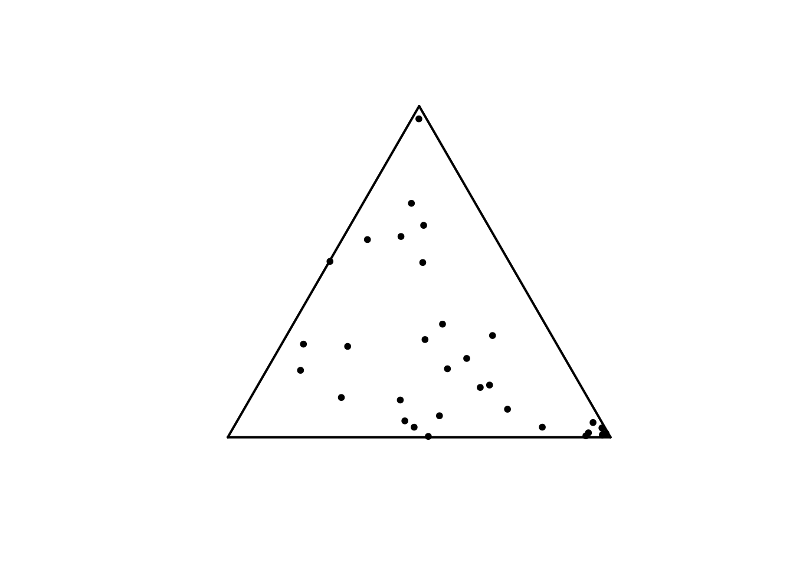
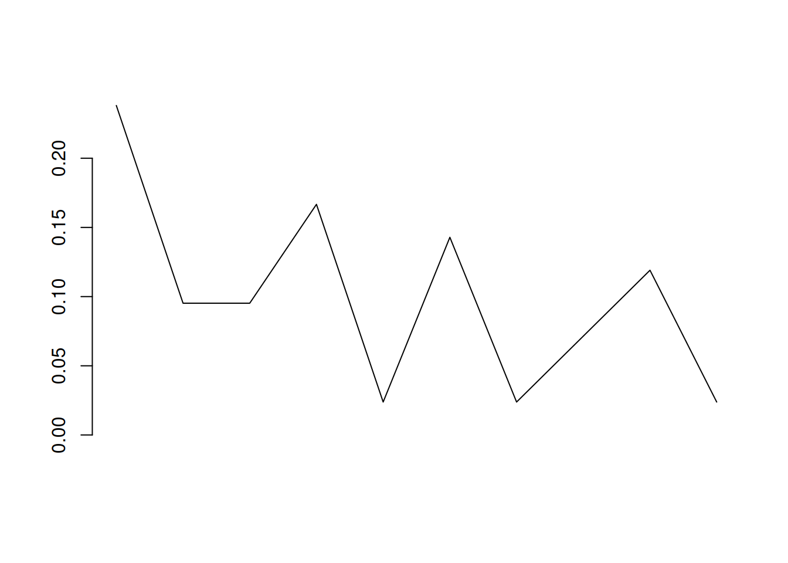
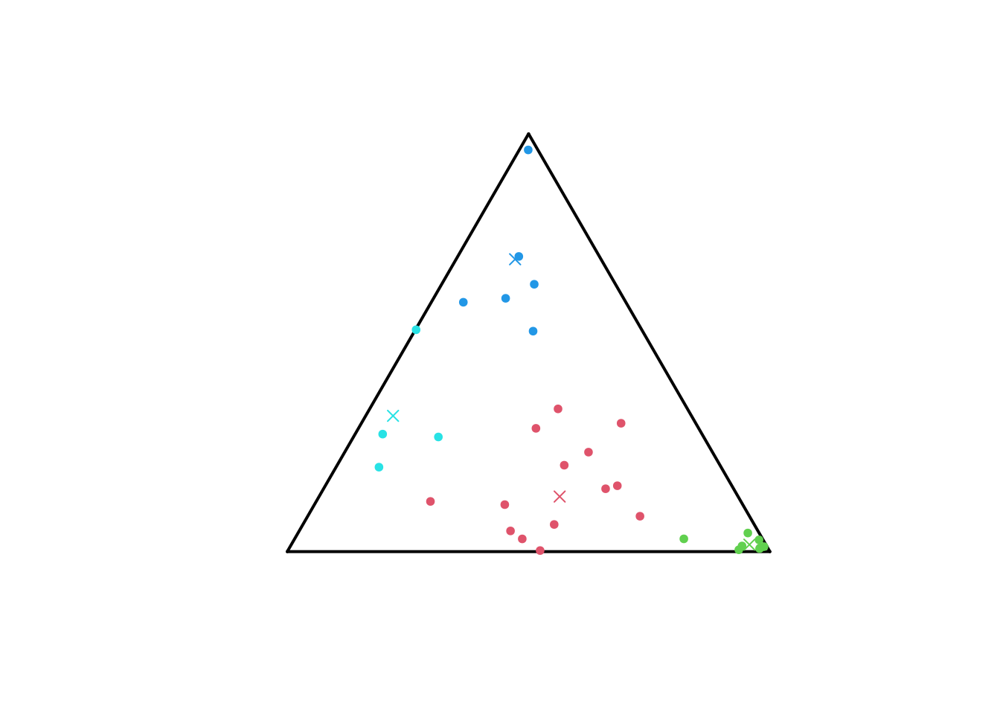
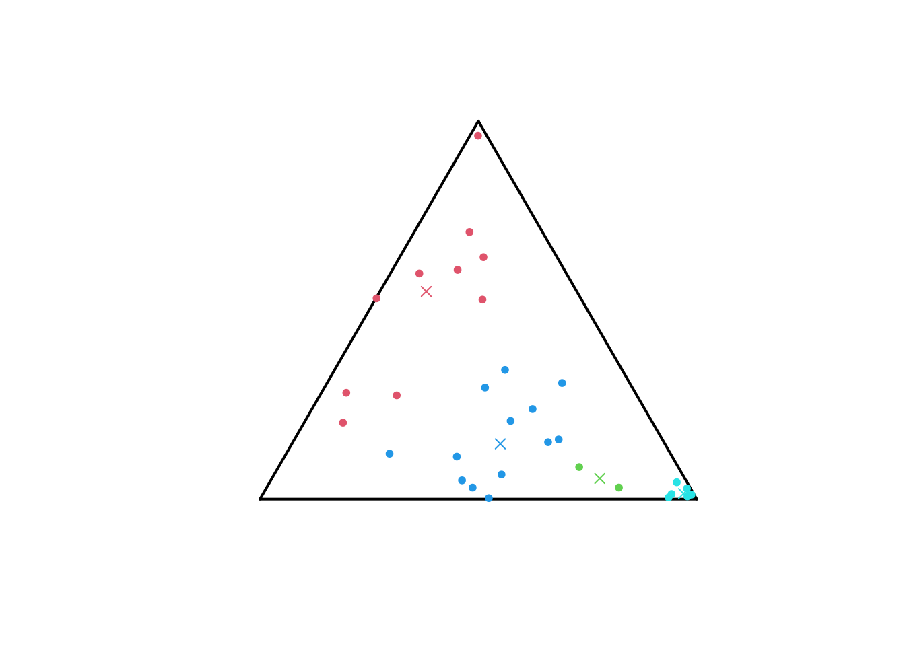

Information-geometric centroids of categorical distributions
Source:vignettes/catdist_centroids_tutorial.qmd
This tutorial is intended to assist the user in getting started with calculating centroids of discrete (probability) distributions relative to the Jeffreys and Jensen-Shannon divergences with the package igcentroids and integrating these computation in a clustering-task workflow. It starts with a short, technical presentation of the underlying S3 classes of R objects the package is built upon, in Section 1. The information-geometric theoretical foundation of the ensueing procedures is outlined in Setions 2 and 3. More precisely, the definitions and properties of Kullback-Leibler (KL), Jeffreys (J) and Jensen-Shannon (JS) divergences (div) and related centroids are reviewed; the usage of methods for computing them is also illustrated. These procedures fully integrate into a clustering-task workflow performed with the package {flexclust}, as illustrated in Section 4.
As a preliminary step, load the package igcentroids, as follows.
It is implicitly assumed that the package igcentroids has been previously installed; if not, please, refer to the README file on top of the repository of the package.
S3 classes igccatdist, igccatdistn, igcmatcatdist and igcmatcatdistn
igcentroids provides several procedures for clustering categorical – or finite-state space – (probability) distributions with same support.
We formally denote the set of positive measures – or categorical distributions – on the finite set . Such a measure is mathematically identifiable to the vector with for all ; it is represented in igcentroids as an object of S3 class igccatdist built upon classical numeric vectors. Such an object is obtained as the output of the eponyme constructor function igccatdist(), taking a positive numeric vector as input.
set.seed(679)
# A positive measure on a 5-state space
p <- igccatdist(sample(1:10, size = 5L, replace = TRUE))igccatdist objects are positive numeric vectors with two attributes class and mass. The first one is obviously "igccatdist" while the second is the mass of the whole set of states i.e., the sum of the components of the vector. Both attributes are displayed when the object is printed.
print(p)
#> [1] 8 2 8 3 5
#> attr(,"class")
#> [1] "igccatdist"
#> attr(,"mass")
#> [1] 26Note that a validation function prevents the user to convert into igccatdist non-positive vectors.
igccatdist(c(1, 0))
#> Error in `new_igccatdist()`:
#> ! all(p > 0) is not TRUE
igccatdist(-(1:3))
#> Error in `new_igccatdist()`:
#> ! all(p > 0) is not TRUEThe subset of positive measures with mass equal to one is of foundamental interest in any field related to probability theory. Its elements are probability measures, called here normalized categorical distributions; they are represented in igcentroids as objects of class igccatdistn, unformally inheriting from igccatdist.
# The binomial distribution of parameters
# n = 4 and p = 0.5 as an igccatdist object
q <- igccatdistn(dbinom(x = 0:4, size = 4L, prob = 0.5))
print(q)
#> [1] 0.0625 0.2500 0.3750 0.2500 0.0625
#> attr(,"class")
#> [1] "igccatdistn" "igccatdist"
#> attr(,"mass")
#> [1] 1
# Normalize a positive vector prior to convert it to igccatdistn
p <- undo_igc(p) # Remove class igccatdist to retrieve a numeric vector
igccatdistn(p/sum(p))
#> [1] 0.30769231 0.07692308 0.30769231 0.11538462 0.19230769
#> attr(,"class")
#> [1] "igccatdistn" "igccatdist"
#> attr(,"mass")
#> [1] 1Sets of (normalized) categorical distributions on the same support are represented as positive matrices – stochastic matrices for normalized categorical distributions; dedicated classes are introduced in igcentroids : igcmatcatdist and igcmatcatdistn.
matcd <- matrix(c(p, q), nrow = 2, byrow = TRUE)
igcmatcatdist(matcd)
#> [,1] [,2] [,3] [,4] [,5]
#> [1,] 8.0000 2.00 8.000 3.00 5.0000
#> [2,] 0.0625 0.25 0.375 0.25 0.0625
#> attr(,"class")
#> [1] "igcmatcatdist"
#> attr(,"mass")
#> [1] 26 1
matncd <- matrix(c(p/sum(p), q), nrow = 2, byrow = TRUE)
igcmatcatdistn(matncd)
#> [,1] [,2] [,3] [,4] [,5]
#> [1,] 0.3076923 0.07692308 0.3076923 0.1153846 0.1923077
#> [2,] 0.0625000 0.25000000 0.3750000 0.2500000 0.0625000
#> attr(,"class")
#> [1] "igcmatcatdistn" "igcmatcatdist"
#> attr(,"mass")
#> [1] 1 1The function bind_igc() eases the creation of igcmatcatdist or igcmatcatdistn objects by binding together objects of classes igc.... Here are some examples, the class of output depending on whether all inputs are normalized or not.
# binding objects of classes igcmatcatdist and igcmatcatdistn
# results in an igcmatcatdist object.
matcd <- igcmatcatdist(matcd)
matncd <- igcmatcatdistn(matncd)
bind_igc(matcd, matncd)
#> [,1] [,2] [,3] [,4] [,5]
#> [1,] 8.0000000 2.00000000 8.0000000 3.0000000 5.0000000
#> [2,] 0.0625000 0.25000000 0.3750000 0.2500000 0.0625000
#> [3,] 0.3076923 0.07692308 0.3076923 0.1153846 0.1923077
#> [4,] 0.0625000 0.25000000 0.3750000 0.2500000 0.0625000
#> attr(,"class")
#> [1] "igcmatcatdist"
#> attr(,"mass")
#> [1] 26 1 1 1
# Add a row to an igcmatcatdist object
r <- igccatdist(sample(1:10, size = 5L, replace = TRUE))
bind_igc(matcd, r)
#> [,1] [,2] [,3] [,4] [,5]
#> [1,] 8.0000 2.00 8.000 3.00 5.0000
#> [2,] 0.0625 0.25 0.375 0.25 0.0625
#> [3,] 1.0000 5.00 7.000 10.00 10.0000
#> attr(,"class")
#> [1] "igcmatcatdist"
#> attr(,"mass")
#> [1] 26 1 33
# Add a row to an igcmatcatdistn object
s <- igccatdistn(dbinom(0:4, size = 4L, prob = 0.3))
bind_igc(matncd, s)
#> [,1] [,2] [,3] [,4] [,5]
#> [1,] 0.3076923 0.07692308 0.3076923 0.1153846 0.1923077
#> [2,] 0.0625000 0.25000000 0.3750000 0.2500000 0.0625000
#> [3,] 0.2401000 0.41160000 0.2646000 0.0756000 0.0081000
#> attr(,"class")
#> [1] "igcmatcatdistn" "igcmatcatdist"
#> attr(,"mass")
#> [1] 1 1 1Methods for generics plot() and points() associated to igccatdistn and igcmatcatdistn are available. Their behaviour depends on the size of the support . More precisely, Two-state and three-state supports benefit of particular representations, for mere of pedagogical purpose, as illustrated by Figures 1 (a) and 1 (b).
# Two-state categorical distributions plot
u <- c(0.5, 0.5)
p1 <- c(0.3, 0.7)
p2 <- c(0.4, 0.6)
x <- igcmatcatdistn(matrix(c(u, p1, p2),
nrow = 3, ncol = 2, byrow = TRUE))
plot(x)
# Three-state categorical distributions plot
runifsimplex <- function(n = 1L) {
x <- runif(n)
y <- runif(n, min = 0, max = 1-x)
res <- igcmatcatdistn(matrix(c(x,y, 1-x-y), ncol = 3, byrow = FALSE))
return(res)
}
set.seed(527)
sampsimp <- runifsimplex(n = 32L)
plot(sampsimp)

plot() and points() for igcmatcatdistn objects.
Categorical probability distributions with bigger state spaces are represented as polylines i.e., continuous piecewise linear functions linking the top of bars in a classical barplot; see Figure 2.
p <- sample(1:10, size = 10L, replace = TRUE)
p <- igccatdistn(p/sum(p))
plot(p)
Computing divergences of a couple of categorical distributions
Divergence functionals constitute a primal notion of information theory and related fields. Among them, the Kullback-Leibler (KL) divergence of two positive measures is of special theoretical and practical importance due to its axiomatic, structural and geometric properties ; see, e.g (Amari 2016). The KL divergence of a couple of positive measures with same support is given by Altought it is not a proper mathematical distance due to lack of symmetry and triangular inequality, its numerous properties make it a relevant measure of discrepancy between positive measures. First of all, for any couple and if and only if .
Restricted to the set of couples of probability distributions, the two former sums in Equation 1 cancel and the KL divergence simplifies to The KL divergence of two positive measures can be computed thanks to the function kldiv() of igcentroids:
set.seed(987)
# KL div for positive vectors
p <- igccatdist(sample(1:10, size = 5L, replace = TRUE))
q <- igccatdist(sample(1:10, size = 5L, replace = TRUE))
kldiv(p, q)
#> [1] 25.48113
kldiv(q, p) # KL is not symmetric
#> [1] 13.06366
# KL div for prob. dist.
p <- igccatdistn(dbinom(0:4, size = 4L, prob = 0.3))
q <- igccatdistn(dbinom(0:4, size = 4L, prob = 0.5))
kldiv(p, q)
#> [1] 0.3291315To overcome the lack of symmetry – that appears to be a serious disagreement for the use of KL divergence for clustering purpose – several symmetrizations have been proposed in the litterature (Nielsen 2019). The Jeffreys and Jensen-Shannon divergences are the two most notable such symmetrizations. Jeffreys divergence of a couple of positive vectors, introduced in (Jeffreys 1946) is the sum of KL divergences of the couple and its chiral version : It is extensively used in machine and deep learning as a loss function (Bousquet and Rouvier 2023), (Nguyen et al. 2017), (Nielsen 2013) and in signal processing (Saleh et al. 2018).
Jensen-Shannon (JS) divergence (Lin 1991), whose first appearance dates back to (Wong and You 1985), is the average of KL-divergences from each vector and with respect to their arithmetic mean; more precisely, Besides its symmetry, JS divergence satisfies additionnal properties that make it relevant in numerous applications: it can be defined for categorical distributions with distinct supports, it always lies between and where and denote the total weight of the state space () – this upper bound being achieved when the supports and are disjoint, and it can be expressed as the diferrence between the Shannon entropy of the arithmetic mean of and and the arithmetic mean of their Shannon entropies. Finally, the square root of define a proper euclidean metric on ; see (Endres and Schindelin 2003).
Jeffreys and JS divergences of two positive vectors or categorical distributions can be computed thanks to the functions jdiv() and jsdiv() in igcentroids.
set.seed(587)
# Jeffreys and JS divs for positive vectors
p <- igccatdist(sample(1:10, size = 5L, replace = TRUE))
q <- igccatdist(sample(1:10, size = 5L, replace = TRUE))
jdiv(p, q)
#> [1] 32.90188
jsdiv(p, q)
#> [1] 3.608267
# Jeffreys and JS divs for prob. dist.
p <- igccatdistn(dbinom(0:4, size = 4L, prob = 0.3))
q <- igccatdistn(dbinom(0:4, size = 4L, prob = 0.5))
jdiv(p, q)
#> [1] 0.6778383
jsdiv(p,q)
#> [1] 0.07907949
# Both are symmetric
all.equal(jdiv(q,p), jdiv(p,q))
#> [1] TRUE
all.equal(jsdiv(q,p), jsdiv(p,q))
#> [1] TRUEMethods of jdiv() and jsdiv() for positive matrices and stochastic matrices are also provided, applying the above functions to all combinations of the rows of the two input matrices and formatting the output as a numeric matrix.
mat1 <- bind_igc(p, q)
r <- igccatdistn(dbinom(0:4, size = 4L, prob = 0.4))
s <- igccatdistn(dbinom(0:4, size = 4L, prob = 0.2))
t <- igccatdistn(dbinom(0:4, size = 4L, prob = 0.1))
mat2 <- bind_igc(r, s, t)
jdiv(mat1, mat2)
#> [,1] [,2] [,3]
#> [1,] 0.1767331 0.2155986 1.079941
#> [2,] 0.1621860 1.6635532 3.515559
jsdiv(mat1, mat2)
#> [,1] [,2] [,3]
#> [1,] 0.02167791 0.02628537 0.1189825
#> [2,] 0.01993551 0.17639492 0.3147952The second matrix input of jdiv() and jsdiv() is optional; if not provided, it is implictly assumed to be equal to the first one, making obvious the computation of the “distance” matrix of a set of positive vectors or categorical distributions – which can further be used as input of classical R functions for clustering; see Section 4.
Computing centroids of a set of categorical distributions
Given a set of positive vectors of size assorted with weights , the Jeffreys and Jensen-Shannon centroids and are defined by and The opmitization set in the definitions (2) and (3) is restricted to the set of probability distributions when are probability distributions; we denote and such centroids of probability distributions so as to avoid confusion on the optimization set under study.
Nielsen (2013) establishes an explicit analytic formula for Jeffreys centroid of positive vectors; precisely, it is given by where and denote respectively the arithmetic and geometric centroids given by and is the branch of the Lambert function, implicitly defined by for ; see (Nielsen 2013) for details. This closed form of Jeffreys centroid of positive vectors is returned by the method jcent() associated with the class igcmatcatdist. It returns an object of class igccatdist, as illustrated in the following chunk.
set.seed(986)
p <- igccatdist(sample(1:10, size = 5L, replace = TRUE))
q <- igccatdist(sample(1:10, size = 5L, replace = TRUE))
jcent(bind_igc(p,q))
#> [1] 1.863589 6.853323 2.474680 5.207380 1.863589
#> attr(,"class")
#> [1] "igccatdist"
#> attr(,"mass")
#> [1] 18.26256Note that the function lambertW0() of the package lamW is used in the backend to compute the Lambert function. Note also that dedicated functions arithcent() and geomcent() allows for computing arithmetic and geometric centroids of positive vectors.
No closed form expression is known for Jeffreys centroid of probability distributions. Five methods are implemented in igcentroids to compute approximated values, as made explicit in the documentation of the method jcent() for igcmatcatdistn objects. In short, the argument method of jcent() identifies the numerical method to be performed by a character string. The approximation returned by jcent() for method = "bsa" relies on the expression of derived by the Lagrangian method in (Nielsen 2013): where is such that , with no explicit expression for it. The value of is then approximated by a binary-search algorithm (bsa).
r <- igccatdistn(dbinom(0:4, size = 4L, prob = 0.4))
s <- igccatdistn(dbinom(0:4, size = 4L, prob = 0.2))
t <- igccatdistn(dbinom(0:4, size = 4L, prob = 0.1))
mat2 <- bind_igc(r, s, t)
jcent(mat2, method = "bsa",
tol = 1e-8) # Precision of the bsa is controlled by tol
#> [1] 0.395958784 0.381942323 0.173819078 0.043506819 0.004772997
#> attr(,"class")
#> [1] "igccatdistn" "igccatdist"
#> attr(,"mass")
#> [1] 1Due to the numerous evaluations of the Lambert function involved in bsa method, this method can be computationnaly expensive, particularly for large state spaces . An alternative approach consists in iteratively computing arithmetic and geometric means of centroids until convergence. This method, refered to as Gauss-Bregman inductive centering (gbic), has an informational geometric foundation, relying on the dually flat structure of induced by KL divergence; see Nielsen (2024). Its excellent performances make it the default method used by jcent(). Three other methods are also provided, for sake of completeness and comparison purposes.
jcent(mat2, # default corresponds to method = "gbic"
tol = 1e-8) # tol controls state-by-state approximation error.
#> [1] 0.395919894 0.381836169 0.173814506 0.043597265 0.004832165
#> attr(,"class")
#> [1] "igccatdistn" "igccatdist"
#> attr(,"mass")
#> [1] 1Package igcentroids (version 0.0.1.0) covers the computation of Jensen-Shannon centroids only for probability distributions. A numerical approximation of is obtained by the ConCave-Convexe Procedure (CCCP) introduced by (Yuille and Rangarajan 2003), as stated in (Nielsen 2020). See the documentation of the function jscent() for details.
jscent(mat2)
#> [1] 0.397343673 0.375236661 0.174943110 0.046764697 0.005711859
#> attr(,"class")
#> [1] "igccatdistn" "igccatdist"
#> attr(,"mass")
#> [1] 1Clustering categorical distributions
igcentroids provides functions for an easy integration of these methods for clustering tasks using the package {flexclust}, as illustrated by the following chunk and Figure 3.
library("flexclust")
# Set jclust family: clustering based on
# Jeffreys divergence and centroids
# Functions jdivflex(), jcentflex() and undo_igc()
# are included in {igcentroids}
# DO NOT MODIFY the following instruction
jfam <- kccaFamily(name = "jclust",
dist = jdivflex,
cent = jcentflex,
preproc = undo_igc)
# The same for Jensen-Shannon divergence and centroids
jsfam <- kccaFamily(name = "jsclust",
dist = jsdivflex,
cent = jscentflex,
preproc = undo_igc)
# Generate a set of random probability distributions
# Three-state categorical distributions plot
runifsimplex <- function(n = 1L) {
x <- runif(n)
y <- runif(n, min = 0, max = 1-x)
res <- igcmatcatdistn(matrix(c(x,y, 1-x-y), ncol = 3, byrow = FALSE))
return(res)
}
set.seed(527)
sampsimp <- runifsimplex(n = 32L)
# Operate clustering
res_jeffreys_clust <- kcca(x = sampsimp,
k= 4, # Number of clusters
family = jfam)
# Operate clustering
res_js_clust <- kcca(x = sampsimp,
k= 4, # Number of clusters
family = jsfam)
# Visualize Jeffreys clusters
plot(sampsimp, col = res_jeffreys_clust@cluster+1)
# Add centroids of clusters
points(igcmatcatdistn(res_jeffreys_clust@centers),
pch = 4,
col = 2:5)
# Visualize Jensen-Shannon clusters
plot(sampsimp, col = res_js_clust@cluster+1)
# Add centroids of clusters
points(igcmatcatdistn(res_js_clust@centers),
pch = 4,
col = 2:5)

We can compute the divergences between the probability distributions and the centroids of the cluster, as illustrated below for the Jeffreys clustering.
cents <- igcmatcatdistn(res_jeffreys_clust@centers) # Centroids
clusters <- split(1:nrow(sampsimp), res_jeffreys_clust@cluster)
jdiv2cents <- list(4)
for (i in 1:4) {
jdiv2cents[[i]] <- jdiv(p = igcmatcatdistn(sampsimp[clusters[[i]],]),
q = cents)
colnames(jdiv2cents[[i]]) <- paste0("Centroid_", 1:4)
}
names(jdiv2cents) <- paste0("Cluster_", 1:4)
jdiv2cents
#> $Cluster_1
#> Centroid_1 Centroid_2 Centroid_3 Centroid_4
#> [1,] 0.04179681 1.4627622 1.1562806 1.1215317
#> [2,] 0.13513820 1.7277522 2.4780415 1.3170095
#> [3,] 0.53523277 1.4404718 4.7757247 2.6307397
#> [4,] 0.18807317 1.5849733 2.8979431 1.6023330
#> [5,] 0.05086308 0.9447104 1.6021936 1.6647139
#> [6,] 0.15196904 0.5591045 2.2893058 2.2933588
#> [7,] 0.10399919 1.3179992 1.0700267 1.3256607
#> [8,] 0.08402536 0.8653833 1.5972523 1.7847049
#> [9,] 0.25892925 1.9605293 0.6047796 0.9368975
#> [10,] 0.33862482 1.2621630 0.9428206 1.7266241
#> [11,] 0.05337381 1.2726543 2.2856323 1.5286908
#> [12,] 0.17427924 2.0451277 0.7215748 0.7551340
#> [13,] 0.06298114 1.8954377 1.7132045 0.9090367
#> [14,] 0.34775212 2.9823803 1.6943987 0.4620123
#>
#> $Cluster_2
#> Centroid_1 Centroid_2 Centroid_3 Centroid_4
#> [1,] 1.1762538 0.007547095 4.521785 4.870659
#> [2,] 1.2544066 0.033535451 5.298650 5.113569
#> [3,] 1.8335925 0.042377553 4.412256 5.916831
#> [4,] 1.7485681 0.019194765 5.303618 5.951605
#> [5,] 0.4653694 0.233081325 3.387479 3.293830
#> [6,] 1.3210977 0.031782600 3.763081 4.955200
#> [7,] 1.7726012 0.020084774 5.160121 5.966074
#> [8,] 2.1064831 0.050871191 5.169548 6.498406
#>
#> $Cluster_3
#> Centroid_1 Centroid_2 Centroid_3 Centroid_4
#> [1,] 1.576205 5.116070 0.1514593751 0.3379225
#> [2,] 1.635318 4.452160 0.0009273484 0.9430653
#> [3,] 4.246695 7.499680 0.6236321861 2.7844979
#> [4,] 1.253974 3.698391 0.0372771886 0.9635677
#> [5,] 0.797882 3.081353 0.1464568790 0.7678379
#> [6,] 1.196562 4.011474 0.0398383290 0.6123780
#>
#> $Cluster_4
#> Centroid_1 Centroid_2 Centroid_3 Centroid_4
#> [1,] 0.5119198 3.457708 0.8365206 0.151698243
#> [2,] 1.2399195 5.115600 1.0657271 0.009254796
#> [3,] 3.4750676 9.046286 0.8596527 0.344943580
#> [4,] 0.9565685 4.545494 1.3616577 0.085255848